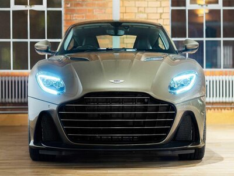

Fotografii cu automobile
Aston Martin DBS, Apollo Intensa Emozione și Koenigsegg Jesko

Aston Martin DBS
Coupe

Apollo Intensa
Hypercar german

Koenigsegg Jesko
Automobil Sport

Aston Martin DBS
Fotografie din față coupe-ului
Apollo Intensa
Design german de înalta calitate

Koenigsegg Jesko
Mașină suedeză făcută pentru circuit